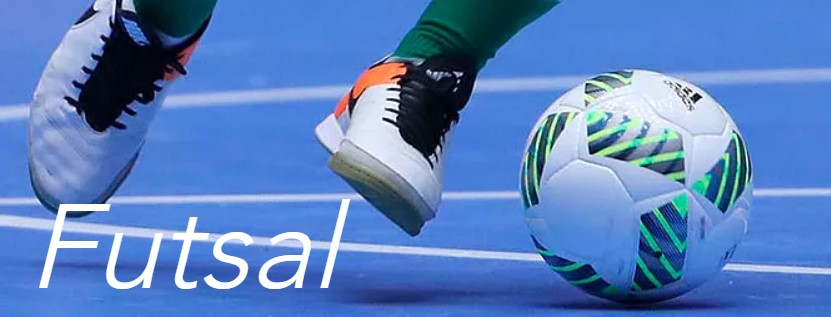

Association sportive d'inspiration chrétienne et protestante
FOOT REFUGIES
FUTSAL
BADMINTON
VOLLEY
RANDONNEE
ACTUALITES
mercredi 10 février 2021
Randonnée les 23, 24 et 25 avril 2021 dans le
Diois
La section randonnée de Sport et Foi organise une sortie
pédestre
entre le vendredi 23 et le dimanche 25 avril prochains,
dans le haut Diois (gîte de la Tour). Intéressé(e) ? Contactez le président Jean-Paul
Taboyan au 06 89 66 28 21.
lundi 1er février 2021
20 ans déjà !
En février 2001, suite à la demande des joueurs de volley de Sport et Foi Valence,
l'association crée un club de volley-ball à Bourg-lès-Valence, et une association
portant le même nom : Agape Athletic Club. En effet, à l'époque, les statuts de
l'association Sport et Foi ne permettaient pas de s'affilier à une Fédération.
18 ans après, en juillet 2019, les 2 associations ont fusionné, sous le nom de "Sport et
Foi-Agape".
lundi 1er février 2021
L'équipe de l'époque
Voici la première équipe du club de volley Agape Athletic Club
de
Bourg-lès-Valence, inscrite au sein de la ligue nationale de volley-ball, en championnat
départemental Drôme-Ardèche 2001-2002 (voir article "20 ans déjà !").
QUI SOMMES-NOUS ?
Sport & Foi est une association sportive d'inspiration chrétienne et protestante.
Il existe aussi des sections locales indépendantes, comme Sport & Foi Valence.
Le but de S&F Valence est de se retrouver tous ensemble (chrétiens ou non, sportifs
confirmés ou non, personnes en situation précaire...) autour des valeurs du sport.
Pour en savoir plus, rendez-vous dans la
A découvrir également :
Notre histoire
Le sport, un phénomène planétaire !
Le sport a pris de nos jours une ampleur incroyable ! Nous n'avons qu'à regarder l'actualité. Les
nouvelles des stars du sport nous parviennent à travers tout type de médias.
Les sportifs sont les héros de notre époque. Le secteur privé, tout comme le secteur public, en a
bien compris les enjeux et son importance, et il y investit des sommes colossales!
le sport ne se réduit pas à la pratique d'une activité. Il peut être un formidable vecteur éducatif,
et de socialisation, un moyen d’unir les gens, de créer des relations, de faire tomber toutes les
barrières d’âges et de conditions sociales.
Depuis 1980, l’association Sport & Foi France est présent dans le milieu sportif en témoignant de ses
valeurs qu’elle incarne et aux messages qu’elle diffuse dès lors que des projets sont élaborés en ce
sens.
Un peu d’histoire…
Il faut savoir que ce sont des chrétiens issus du réveil spirituel du déut du 19 ème siècle qui
ont inventé les sports d’équipe !
- Le rugby inspiré en 1823 par Webb Ellis (Angl) étudiant et futur pasteur. "Le trophée de la coupe du
monde de rugby
porte le nom de William Webb Ellis, ce garçon qu'il prit la main le ballon lors d'un match de football
au collège Rugby,
provoquant ainsi l'origine de ce jeu! Une statue d'Ellis a été édifié au collège. Cette histoire a été ,
pour la
première fois, rapporté plus de 50 ans après les faits et après le décès d'Ellis en 1872, sa tombe n'a
été découverte
qu'en 1958, à Menton! "
- Le football codifié en 1848 à l’Université Protestante de Cambridge (Angl)
- Le basket-ball inventé en 1891 par James Naismith (USA) (YMCA : Young Men Christian Association). Au
IXe arrondissement
du 14 rue de Trévise à Paris, abrite, derrière une façade anonyme, la plus vieille salle de basket du
monde! Le gymnase
construite en pièces détachées par le mouvement a accueilli le premier match en Europe, en 1893.
- Le volley-ball inventé en 1895 par William Morgan (USA) (YMCA : Young Men Christian Association). La
pratique du volley-ball
a été importée en France à la fin de la première guerre mondiale par YMCA et a participé à la création
des Jeux interalliés qui
se tenaient dans le bois de Vincennes. Ce mouvement de jeunesse protestante importent en Europe la
culture sportive américaine
et ses valeurs.
- Le futsal inventé en 1930 par Juan Carlos Ceriani (Uruguay) (YMCA : Young Men Christian Association).
Dès sa création, en 1844, le mouvement des YMCA accorde une place majeure à la pratique régulière d’une
activité physique et l’intègre dans ses programmes.
Ainsi, le triangle (qui figure dans le logo) est le symbole de l’équilibre sur les plans intellectuel,
spirituel et physique, jugé essentiel pour l’épanouissement d’un être humain.
En 1852 plusieurs associations en France sont créées à l’initiative de jeunes travailleurs protestants :
elles rejoignirent alors le mouvement des YMCA, sous la dénomination française
des UCJG, Union Chrétienne de Jeunes Gens. C'est la naissance des premières YMCA en France (l’Union de
Paris, Nîmes et Strasbourg).
(également à télécharger )
A Valence…
Dans les années 1930 le foyer protestant sous l’appellation de l’Union Chrétienne des Jeunes Gens
(YMCA) a participé à un championnat de basket départemental. A l’époque les sportifs chrétiens du
valentinois n’ont pas su consolider leur association sur du long terme. C'est seulement à la fin des
années 80 que l’on trouve trace de l'existence d’une équipe chrétienne de football intitulée «
Espérance ». Cette équipe interconfessionnelle du valentinois a participé au championnat de ligue
Sud Est organisé par Sport & Foi France.
En février 1995 par l’impulsion de Jean-Paul TABOYAN une structure sous l’appellation « Sport et Foi
- vallée du Rhône » a été créée officiellement.
Si les activités ont commencé par les sorties pédestres et raquettes en montagne, l’association a
fait son chemin en mettant en place des disciplines sportives qui ont permis de toucher un grand
nombre de personnes. Avec l’apport des équipes étrangères et les tournois sportifs organisés chaque
année (volley-ball, football, futsal) Sport et Foi a bénéficié du prêt des installations sportives.
En mars 2001 la création d’un club de volley-ball sous l'appellation « Agape Athlétic Club » de
Bourg-Lès-Valence a permis aux membres sportifs de participer à un championnat officiel.
En mars 2012 un essaimage en provenance de Sport et Foi a permis de créer l’association.
« La Passerelle » à Saint-Marcel-lès-Valence qui concerne une activité de futsal pour mineurs par la
suite une section de basket-ball pour adulte a vu le jour.
Chronologie
Au premier trimestre 1996 Beth Leasure, cycliste américaine de l’état du Colorado,
membre de Sport & Foi, a participé à plusieurs courses cyclistes et notamment le Tour de la Drôme.
En novembre 1997, l’association a organisé son premier tournoi de volley inter églises à
Bourg lès Valence.
En juin 1998 pendant le mondial de football en France, des footballeurs de Manchester
(Eng)) ont participé à plusieurs rencontres M.P.T, JS Valence, mairie de Valence, SDF, Détenus,
tournoi au Polygone suivi d’un concert.
En mars 1999 Sport & Foi a organisé son premier tournoi de football inter quartiers dans
le valentinois.
En juin 1999 l’association a été récompensée du prix « Défi Jeune » de Jeunesse et Sport
de la Drôme
En juin 1999 des footballeurs en provenance des Etats-Unis « Les Chicago Eagles »
participent à des rencontres amicales (M.P.T - Clubs - Détenus).
En septembre 2000 l’association est récompensée du « concours Ecureuil » de la Caisse
d’Epargne (26-07).
En novembre 2000 un partenariat a été établi avec le Comité Départemental de la
Prévention de l’Alcool de la Drôme dans une action de prévention de l’alcoolisation excessive dans
le milieu sportif.
En février 2001 création d’un club de volley-ball à Bourg-lès-Valence « Agapè Athlétic
Club »
En février 2001 Sport & Foi a organisé son premier tournoi de futsal de la Saint
Valentin.
En juin 2001 une équipe de footballeurs du collège Gordon de Boston (USA) a participé à
deux rencontres, la M.P.T. de Bourg lès Valence et des détenus de la maison d’arrêt de Valence.
En avril 2002 le joueur international brésilien Edmilson de l’Olympique Lyonnais a
parrainé la quatrième édition du tournoi de football de Sport & Foi à Bourg lès Valence.
En janvier 2005 l’association Sport & Foi a fêté ses dix ans d’existence avec la
participation des églises protestantes (1500 pers) au cours du quelle une célébration avait lieu à
Valence.
En juin 2005 Sport & Foi a organisé un week-end « sport et musique » avec la présence
d’une équipe de basketteurs américains (état de l’Ohio) qui ont joué contre des clubs et des détenus
de Valence.
En novembre 2006 Agapé et Sport & Foi ont mis en place un projet socio sportif (escalade
et prévention) en partenariat avec la ville de Bourg lès Valence et les CRS de secours en montagne.
En avril 2007 Sport & Foi a organisé des tournois de futsal pour les benjamins et
les seniors pour parrainer un enfant d’Arménie avec le soutien du S.E.L.
En octobre 2007, 350 enfants ont participé au 1er Olympiade « Kids Games » au stade
Georges Pompidou à Valence organisé par Sport & Foi et la Ligue en collaboration avec l’Alliance
Evangélique du Valentinois.
Au premier semestre 2008 Sport & Foi s’est associée à un projet « les amis du
Plovier » de Valence pour collecter des fonds à la construction d’un city stade pour le
handisport. Plusieurs tournois sportifs ont été organisés
pour les adultes et les enfants.
Au premier semestre 2009 des tournois ont été organisés pour aider l’Entraide
Protestante de Valence à s’équiper en matériels pour des activités sportives adressées aux
jeunes en situation d’errance.
En mars 2009 J-P Taboyan président de S&F a reçu la médaille de bronze de Jeunesse
et Sport. L’association est reconnue par l’Office des Sports du Valentinois.
En septembre 2009 une sélection de basketteurs américains (Kansas) ont joué contre
des clubs du département, l’handisport, les détenus de la maison d’arrêt de Valence.
Au premier semestre 2010 des manifestations sportives ont été organisées pour
collecter des fonds pour des enfants d’Haïti.
En mars 2012 création de « La Passerelle Saint Marcelloise » - Sport collectif pour
mineure.
En décembre 2013 création d’une section basket loisir au sein de la Passerelle.
En aout 2017 tournée d’une sélection universitaire américaine « News Release
Basketball » du Colorado (matchs amicaux contre des clubs, animations enfants et handisport,
détenus et centre d’insertion pour mineure).
En novembre 2017 création d’une section badminton à Bourg-lès-Valence
En mars 2018 création d’une section de football pour les demandeurs d’asile de
Valence
En Juillet 2019 fusion des deux associations Sport et Foi Valence et Agapé de
Bourg-lès-Valence
En décembre 2019 Jean-Marc Theil Vice-président de 1999/2019 a été médaillé de
bronze de la Jeunesse, des sports et de l’engagement associatif de la Drôme
INSCRIPTION
Vous souhaitez vous inscrire pour la saison 2021-2022 ? Tout ce
dont vous avez besoin est
ici !
LES SECTIONS
Section Football réfugiés
Responsable : Vincent PERRI
07 83 71 70 38
2 créneaux chaque semaine :
Lundi 20h-22h
VALENCE - gymnase
Marcel Pagnol
Vendredi 18h-20h
VALENCE - stade de
la Chamberlière
Cette nouvelle section a vu le jour en mars 2018 suite à une rencontre avec Claude
Pettmann, président de l’AFP - Carrefour Cultures de Valence et Jean-Paul Taboyan,
président de Sport et Foi- Agapé.
L’association Carrefour Cultures promeut des actions favorisant le contact entre les
diverses cultures présentes sur notre territoire. Claude Pettmann souligne que beaucoup
de jeunes réfugiés, fuyant les situations périlleuses de leur pays, demandent à
pratiquer le sport.
Sous l’impulsion du Président de Sport et Foi – Agape, une équipe de bénévoles s’est
greffée au projet, afin qu'il puisse se réaliser. Une vingtaine de jeunes en provenance
d’Afghanistan, du Soudan, d’Erythrée et d’autres pays d’Afrique, composent l’équipe de
football. Ils s’entrainent ponctuellement en extérieur ou dans un gymnase.
Des matches amicaux sont organisés ou bien des tournois et souvent ce sont des
opportunités de faire connaitre nos besoins en logistique (Maillots, shorts, chaussures
de futsal ou extérieur, chasubles, plots, ballons de futsal et extérieur)
Toutes personnes sont les bienvenues pour nous aider : les besoins sont multiples !
Prenez contact auprès du Président.

Section Futsal
Responsable : Wameng LY
06 61 76 95 70
jeudi (2 créneaux) : 18h-20h et 20h-22h
VALENCE - gymnase
Marcel Pagnol
L’objectif premier de la section est de se faire plaisir dans le jeu tout en respectant
son adversaire. Pendant les collations nous donnons l’occasion aux joueurs d’apprendre à
mieux se connaitre, et aux nouveaux de s'intégrer.
Les membres participent à des tournois dans des lieux variés : centre pénitencier de
Valence, matches amicaux sur invitation, ou encore Télethon.
Pendant l’année, nous organisons deux tournois en interne, afin que les joueurs des deux
créneaux puissent se rencontrer.
Depuis 2008, Arnaud, trisomique est membre : c’est un privilège de l’avoir dans nos
effectifs. Une deuxième personne trisomique est arrivée en 2017, Martin, bien intégré
également et qui prend du plaisir à jouer en équipe !
Section Badminton
Responsable : Caroline MANOUKIAN
06 77 90 79 63
Jeudi 20h-22h
BOURG-LES-VALENCE -
Gymnase Louis Jourdan
Section Volley
loisir ou compétition
Responsable : Kéléto MASEI
07 77 08 16 13
Lundi 20h-22h
BOURG-LES-VALENCE -
Gymnase Louis Jourdan
Le volley-ball est un jeu d’équipe où la technique joue un rôle important pour chaque
joueur.
Nos objectifs sont les suivants :
Que nos membres puissent progresser par des exercices techniques simples afin
d'obtenir une certaine aisance de jeu sans "se prendre la tête" !
Créer une dynamique d'entraide
Faire en sorte que chaque personne puisse trouver sa place, s’encourager et former
un collectif.
Si ces ojectifs vous motivent, vous êtes le (la) bienvenu(e) quelque soit votre niveau.
La section est composée de deux groupes :
Une équipe évoluant en championnat Ufolep Drome-Ardèche
Une section loisir
Section Randonnée
Responsables : Claude PETTMAN, Jean-Paul TABOYAN
à pied ou en raquettes
06 89 66 28 21
sorties ponctuelles : nuit /
journée /
week-end
Vercors
Depuis la création de l’association en 1995, le trekking et les sorties en raquettes en
moyenne montagne ont été organisés ponctuellement souvent sur la durée de 3 à 4 jours.
En 2018 nous avons relancé la randonnée après un temps sabbatique en accueillant des
demandeurs d’asile.
Les sorties que nous proposons plus récemment ont une difficulté moyenne moins de 1000m
de dénivelés et pour des marcheurs qui ont l’habitude d’accumuler plus de 6 heures de
randonnée.
la demande nous pouvons vous soumettre des nuitées en refuge non gardé ou bien en gîte.
Pour plus de renseignements, prenez contact auprès du Président.